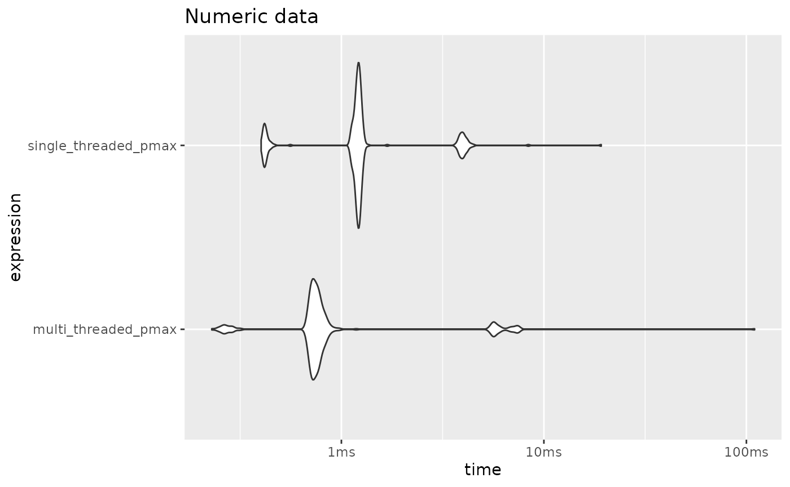
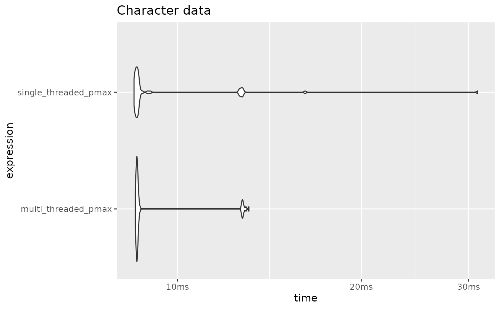
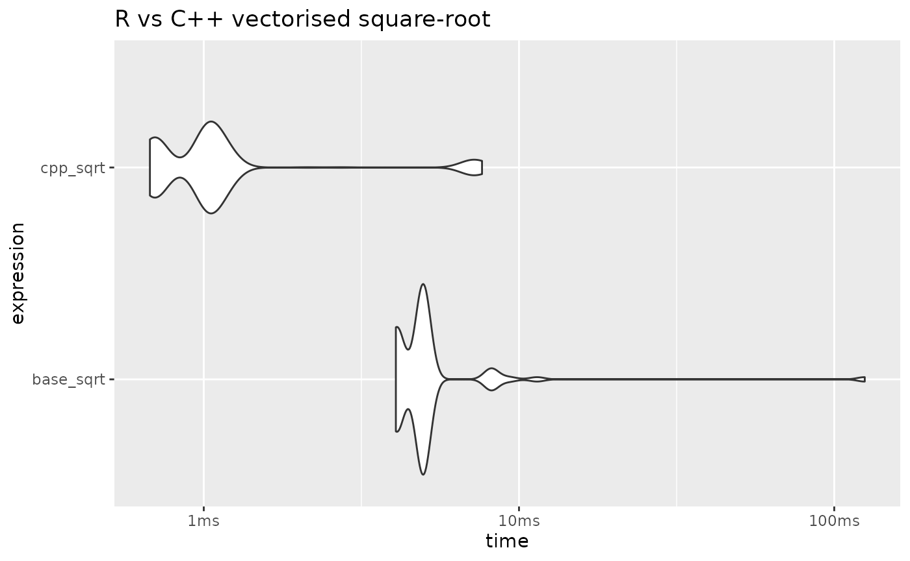
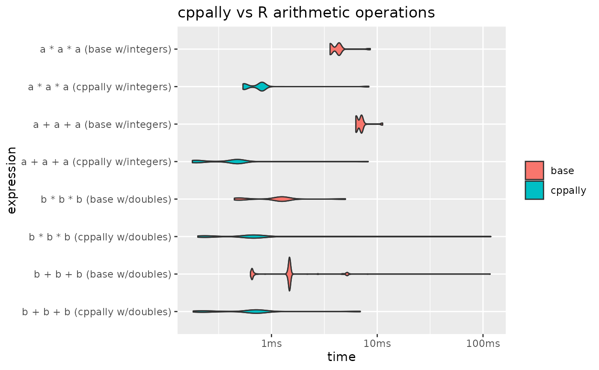

This vignette is mainly a gallery of examples, serving to provide intuition behind the usage of cppally functionals, as well as showcasing their utility.
A note on writing code in C++ versus R
Working with scalars demands a different mental model to the one R typically encourages.
In R we usually vectorise everything upfront by using vectors and vectorised operations everywhere possible. For R this is both cleaner and more efficient. In C++ the reverse is true. It is arguably cleaner to write functions at the scalar level, and then vectorise after the fact.
As will soon be demonstrated in this vignette, pmap()
exists to bridge that final step of taking scalar-based
functions and vectorising1 them.
Let’s load cppally in R and include cppally in our cpp or header file to get started.
pmap
pmap is a C++ variadic function that allows one to apply
a function across corresponding elements of multiple vectors.
Example: vectorised binary max
[[cppally::register]]
r_vector<r_dbl> cpp_pmax(r_vector<r_dbl> x, r_vector<r_dbl> y){
return pmap(
/* fn = */ [](auto a, auto b){
/* expr = */ return max(a, b);
},
/* vectors = */ x, y
);
}
x <- c(10, 20, 30)
y <- c(10, 50, 0)
cpp_pmax(x, y)
#> [1] 10 50 30
# pmap also recycles vectors
cpp_pmax(x, 15)
#> [1] 15 20 30Example: vectorised if else
template <RVector T>
[[cppally::register]]
T cpp_if_else(r_vector<r_lgl> condition, T if_true, T if_false, T if_na){
return pmap(
[](r_lgl condition_, auto yes, auto no, auto missing) {
if (condition_.is_true()){
return yes;
} else if (condition_.is_false()){
return no;
} else {
return missing;
}
},
condition, if_true, if_false, if_na
);
}
cpp_if_else(c(TRUE, FALSE, NA), "yes", "no", "missing")
#> [1] "yes" "no" "missing"pmap_with_index() is a variant that allows one to
capture the index as we iterate along the vector
Example: Integer sequence along vector
template <RVector T>
[[cppally::register]]
r_vector<r_int> cpp_seq_along(T x){
return pmap_with_index([](r_size_t i, auto){ // 2nd arg included so function can compile
return as<r_int>(i) + 1; // R is 1-indexed
}, x);
}
cpp_seq_along(letters)
#> [1] 1 2 3 4 5 6 7 8 9 10 11 12 13 14 15 16 17 18 19 20 21 22 23 24 25
#> [26] 26reduce
r_vector::reduce() is a left-fold reduction functional
that successively applies a binary function along the elements of the
vector (from left-to-right). It allows for returning early and
explicitly continuing by calling done() and
keep(). The input function is typically a lambda, but can
also be a callable (struct with operator()).
Example of summing a vector with reduce
[[cppally::register]]
r_dbl cpp_sum(r_vector<r_dbl> x){
return x.reduce([](auto a, auto b){ return a + b; });
}
cpp_sum(1:10)
#> [1] 55We could have also passed the callable
std::plus<>{}, which makes it even more readable.
cpp_sum2(1:10)
#> [1] 55Use cumulative_reduce to return a vector of all the
intermediate results of the reduction.
[[cppally::register]]
r_vector<r_dbl> cpp_cumsum(r_vector<r_dbl> x){
return x.cumulative_reduce(std::plus<>{});
}
cpp_cumsum(1:10)
#> [1] 1 3 6 10 15 21 28 36 45 55While the above examples are useful for showing how to write a sum by
hand, cppally provides sum() for free.
cpp_sum3(c(10, 20, 30))
#> [1] 60Returning early
To perform a reduction until a condition is met, use the helpers
done() and keep()
Example: Check vector has any NA or all
NA
[[cppally::register]]
bool cpp_any_na(r_vector<r_dbl> x){
return x.reduce([](auto, auto curr){ return is_na(curr) ? done(true) : keep(false); }, /*init = */ false);
}
[[cppally::register]]
bool cpp_all_na(r_vector<r_dbl> x){
return x.reduce([](auto, auto curr){ return is_na(curr) ? keep(true) : done(false); }, /*init = */ true);
}
x <- c(1, 2, NA, 4, 5)
cpp_any_na(x)
#> [1] TRUE
cpp_all_na(x)
#> [1] FALSENotice that the two folds are identical - only
done/keep and init are swapped.
This is the general pattern for any/all-style predicates.
Example: greatest-common-divisor across integer
vector. The trick here is to break when the result is 1 as
gcd(1, x) = 1 for any x.
Other pmap helpers
There are 2 core pmap functionals, with 9 variants in total.
Core pmap functionals
pmap- Applies a function across elements.pmap_with_index- Likepmapbut the first argument of the lambda must be an index.
Other pmap variants
pmap_parallel- Likepmapbut executed using multiple threadspmap_simd- Likepmapbut executed under OpenMP SIMD instructionspmap_parallel_simd- Likepmapbut multi-threaded and executed under OpenMP SIMD instructionspmap_parallel_with_index- Likepmap_with_indexbut executed using multiple threadspmap_simd_with_index- Likepmap_with_indexbut executed under OpenMP SIMD instructionspmap_parallel_simd_with_index- Likepmap_with_indexbut executed using multiple threads and under OpenMP SIMD instructionspmap_with_shift- A convenient wrapper aroundpmapto work with lagged values. Positional helperslag(k),lead(k),curr()must be used to access lagged values.lag_exists()andlead_exists()can be used to test for out-of-bounds indexing. Out-of-bounds indexing returnsNAby default, though this default can be changed inlag()andlead().
Multi-threading safety
All pmap variants try very hard to avoid unsafe
multi-threaded calls to R C API entry-points. Multi-threaded and/or SIMD
execution only applies for RVectorisable types, meaning
that for types like r_str which are not inherently
thread-safe, execution is always single-threaded and
non-SIMD, even if you request multiple threads or
SIMD.
To illustrate this, let’s revisit our pmax from earlier
but this time using pmap_parallel and with a template that
accepts r_dbl or r_str vectors.
// Allows us to set threads and automatically restore them once thread_guard is destroyed (even if R aborts)
struct thread_guard {
int curr_threads;
// Set threads and store previous threads
thread_guard(int n) {
curr_threads = get_threads();
set_threads(n);
}
// Restore threads on destruction
~thread_guard() {
set_threads(curr_threads);
}
};
template <typename F>
decltype(auto) with_threads(int n, F&& f) {
thread_guard guard(n);
return std::forward<F>(f)();
}
template <typename T>
requires (any<T, r_dbl, r_str>) // doubles or strings
[[cppally::register]]
r_vector<T> cpp_parallel_pmax(r_vector<T> x, r_vector<T> y, int n_threads){
return with_threads(n_threads, [&]{
return pmap_parallel(
[](const auto& a, const auto& b){
return max(a, b);
},
x, y
);
});
}
We can detect whether or not multiple threads were used by observing benchmark time.
library(bench)
library(ggplot2)
x <- as.double(rpois(5e05, lambda = 10))
y <- as.double(rpois(5e05, lambda = 15))
(
mark(
single_threaded_pmax = cpp_parallel_pmax(x, y, n_threads = 1),
multi_threaded_pmax = cpp_parallel_pmax(x, y, n_threads = 4)
) |>
autoplot(type = "violin")
) +
labs(title = "Numeric data")
We can see that the same benchmarks on character vector data yield identical results between the one requesting 1 thread and the one requesting 4 threads. Even though we request 4 threads, it still gets executed as single-threaded.
x <- as.character(x)
y <- as.character(y)
(
mark(
single_threaded_pmax = cpp_parallel_pmax(x, y, n_threads = 1),
multi_threaded_pmax = cpp_parallel_pmax(x, y, n_threads = 4)
) |>
autoplot(type = "violin")
) +
labs(title = "Character data")
Lagged operations
Use pmap_with_shift to perform lagged operations. It
checks for out-of-bounds access and therefore is safer than hand-writing
it via pmap_with_index
[[cppally::register]]
r_vector<r_int> cpp_lag(r_vector<r_int> x, int k){
return pmap_with_shift([&](auto a){
return lag(a, k);
}, x);
}
# Lags
cpp_lag(1:10, k = 1)
#> [1] NA 1 2 3 4 5 6 7 8 9
cpp_lag(1:10, k = 2)
#> [1] NA NA 1 2 3 4 5 6 7 8
cpp_lag(1:10, k = 3)
#> [1] NA NA NA 1 2 3 4 5 6 7
# Leads
cpp_lag(1:10, k = -1)
#> [1] 2 3 4 5 6 7 8 9 10 NA
cpp_lag(1:10, k = -2)
#> [1] 3 4 5 6 7 8 9 10 NA NA
cpp_lag(1:10, k = -3)
#> [1] 4 5 6 7 8 9 10 NA NA NApmap_with_shift has five helpers: lag(),
lead(), curr(), lag_exists(), and
lead_exists(). These are designed to assist in performing
efficient lagged operations in a vectorised context, while maintaining
readability.
Example: Lagged differencing
[[cppally::register]]
r_vector<r_dbl> cpp_diff(r_vector<r_dbl> x){
return pmap_with_shift([&](auto a){
return curr(a) - lag(a);
}, x);
}
cpp_diff(1:10)
#> [1] NA 1 1 1 1 1 1 1 1 1
cpp_diff(seq(10, 100, by = 5))
#> [1] NA 5 5 5 5 5 5 5 5 5 5 5 5 5 5 5 5 5 5In-place functionals
To perform in-place transformations, use r_vector::apply
as pmap always allocates a fresh vector and therefore
cannot do in-place modification. apply comes in the same
flavours as pmap - apply_simd,
apply_parallel, apply_parallel_simd, and the
_with_index variants.
[[cppally::register]]
r_vector<r_dbl> cpp_in_place_abs(r_vector<r_dbl>& x){
x.apply([](auto a){ return abs(a); });
return x;
}
x <- c(-20, -10)
cpp_in_place_abs(x)
#> [1] 20 10
x # Modified in-place
#> [1] 20 10r_vector::shift is a helper which can shift an entire
vector in-place. It takes shift k and an optional
fill_value which defaults to NA.
[[cppally::register]]
r_vector<r_dbl> cpp_in_place_lag(r_vector<r_dbl>& x, int k){
x.shift(k);
return x;
}
x <- c(1, 2, 3, 4, 5)
cpp_in_place_lag(x, k = 1)
#> [1] NA 1 2 3 4
x # lagged in-place
#> [1] NA 1 2 3 4
# keep lagging until we run out of elements to lag
cpp_in_place_lag(x, k = 1)
#> [1] NA NA 1 2 3
cpp_in_place_lag(x, k = 1)
#> [1] NA NA NA 1 2
cpp_in_place_lag(x, k = 1)
#> [1] NA NA NA NA 1
cpp_in_place_lag(x, k = 1)
#> [1] NA NA NA NA NAVectorised math
pmap also makes it easy to write vectorised math
functions.
Example: Vectorised square-root
cppally provides a scalar version of sqrt(), which can
be easily vectorised with pmap.
[[cppally::register]]
r_vector<r_dbl> cpp_sqrt(r_vector<r_dbl> x){
return pmap_parallel_simd(
[](auto v){
return sqrt(v);
},
x
);
}Here we are using pmap_parallel_simd, a variant of
pmap that applies the supplied transformation under
multiple threads and under an OpenMP SIMD directive. SIMD
(single-instruction-multiple-data) is when the machine performs the same
operation on multiple data points instead of one data point at time.
Let’s benchmark this against base::sqrt(), but first
let’s use 4 threads for the rest of the examples in this vignette.
cpp_set_threads(4) # Set 4 threads for the rest of the vignette
x <- rnorm(5e05, mean = 50)
(
mark(
base_sqrt = sqrt(x),
cpp_sqrt = cpp_sqrt(x)
) |>
autoplot(type = "violin")
) +
labs(title = "R vs C++ vectorised square-root")
For more math functions, see cppally/math/math.h, a
header containing a rich set of cppally math functions.
cppally also provides quite a few vectorised operators out-of-the-box. The vectorised operators currently defined:
binary:
+,-,*,/,+=,-=,*=,/=,==,<=,<,>=,>,|,&
unary: !,-
When it comes to arithmetic operations, both cppally and R are heavily optimised to use in-place modification where possible. This greatly improves performance when multiple arithmetic operations are chained one after the other.
Since R is heavily optimised in this case, any performance gains cppally makes over R are likely to come from using multiple threads.
template <RNumber T>
[[cppally::register]]
r_vector<T> cpp_add(r_vector<T> x, r_vector<T> y, r_vector<T> z){
return x + y + z;
}
template <RNumber T>
[[cppally::register]]
r_vector<T> cpp_multiply(r_vector<T> x, r_vector<T> y, r_vector<T> z){
return x * y * z;
}
a <- sample(c(-1L, NA_integer_, 0L, 1L, -100L, 100L), 5e05, replace = TRUE)
b <- sample(c(NA_real_, 0, -1/3, 1/3, -10^9, 10^9), 5e05, replace = TRUE)
results <-
mark(
`a + a + a (base w/integers)` = a + a + a,
`a * a * a (base w/integers)` = a * a * a,
`b + b + b (base w/doubles)` = b + b + b,
`b * b * b (base w/doubles)` = b * b * b,
`a + a + a (cppally w/integers)` = cpp_add(a, a, a),
`a * a * a (cppally w/integers)` = cpp_multiply(a, a, a),
`b + b + b (cppally w/doubles)` = cpp_add(b, b, b),
`b * b * b (cppally w/doubles)` = cpp_multiply(b, b, b),
check = FALSE
)
results |>
autoplot(type = "violin") +
geom_violin(aes(fill = ifelse(grepl("base", expression), "base", "cppally"))) +
labs(title = "cppally vs R arithmetic operations") +
scale_y_discrete(limits = rev) +
theme(legend.title = element_blank())
From the results we can see that integer operations are faster with
cppally. This is partly due to multiple threads being used, but also
because cppally integer arithmetic is carefully written to be
SIMD-friendly. It propagates NA values and also returns
NA on integer-overflow, so it is just as safe as R. The
difference is that the arithmetic is written to be as branchless as
possible, allowing SIMD instructions to be executed. You can see the
internal implementation in scalar/arithmetic_ops.h.